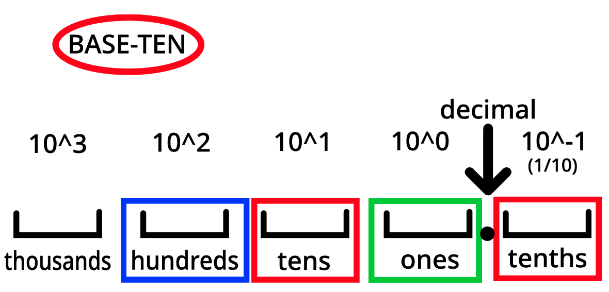

The following is a collection of everything in my notebook from the ALPS class.
A simple section about places and bases.
The drawing here shows the Base-10 system for writing numbers. The sideways square brackets ([) are buckets, which are places for digits (1, 2, 3, 4, 5, 6, 7, 8, 9, and 0) to go. Each bucket has a place value.
Each place value has its own amount. You can see in the diagram that each corresponds to a power of ten, which is the base. For example, the place 3 digits from the decimal corresponds to 10 to the power of 2, which is one hundred. To find the value, multiply the number in the place by its place value - so if there was a three there, three times one hundred is three hundred, so that place is three hundred.
A short section about deducing functions.
| IN | OUT |
|---|---|
| 1 | 4 |
| 2 | 7 |
| 3 | 10 |
| 4 | 13 |
| 5 | 16 |
| 6 | 19 |
| 7 | 22 |
| 8 | 25 |
| n | 3n-1 |
You can see here a simple funciton of 3n+1. If you notice, each output is three from the last. This means is is a times three function. If you know that, you can easily deduce that this funciton is 3n+1.
A short section on adding fractions.